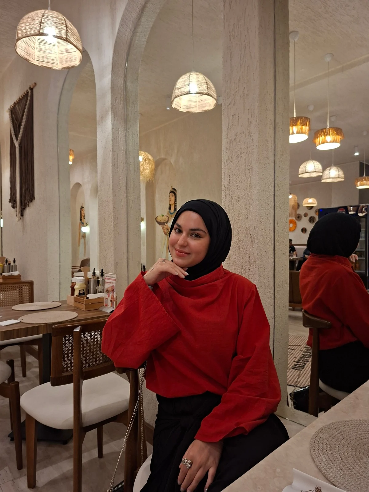
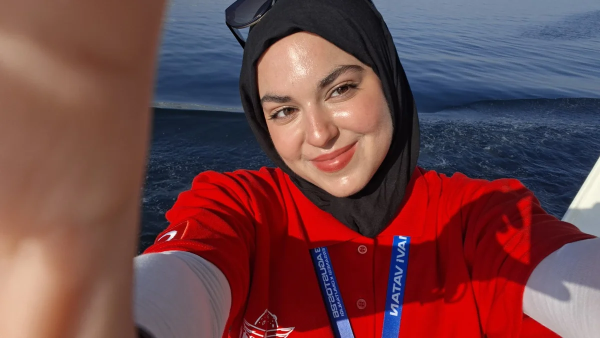

Ürün
tanıtımı
Ürününüzün özelliklerini anlaşılır bir hikâyeyle buluşturan, dikkat çekici içerikler.
Ürün odaklı kısa videolarSAMİMİ HİKÂYELER. GERÇEK BAĞLAR.
Merhaba, ben Esma Keklik.
Ürünleri hayatın içinden anlatan bir UGC içerik üreticisiyim.
Ürün tanıtımı · Ürün kullanımı · Deneyim
Markanız için samimi, doğal ve dönüşüm odaklı içerikler.

01 / PORTFOLYO
Bir ürün. Bir hikâye. Doğal bir bağ.
UGC çalışmalarımdan bir seçki.
Çalışmalar yükleniyor…
Bu bölümdeki içerikler kişisel portfolyo çalışmalarıdır; marka iş birliği iddiası taşımaz.

Merhaba, ben Esma! ↗02 / HAKKIMDA
Ben Esma Keklik. 20 yaşındayım ve üniversite öğrencisiyim. Markalar için etkili, samimi ve dönüşüm odaklı UGC içerikler üretiyorum.
Bir ürünü yalnızca göstermek yerine, hedef kitlenin günlük hayatının doğal bir parçasıymış gibi hissettiren içerikler oluşturmayı önemsiyorum.
Sizin markanız için de dikkat çekici, doğal ve güven veren içerikler üretmek isterim.
Hikâyenizi birlikte anlatalım ↗03 / HİZMETLER
İhtiyacınıza uygun bir format,
ürününüze özgü bir anlatım.
Ürününüzün özelliklerini anlaşılır bir hikâyeyle buluşturan, dikkat çekici içerikler.
Ürün odaklı kısa videolarÜrünün günlük yaşamda nasıl yer bulduğunu gösteren, adım adım kullanım içerikleri.
Rutin & kullanım gösterimiKişisel ürün deneyimini doğal bir dille aktaran, samimi ve anlaşılır içerikler.
Kişisel kullanım deneyimi04 / KISA UGC REHBERİ
UGC, kullanıcı bakış açısıyla hazırlanan içeriktir. Markanız için hangi yaklaşımın uygun olduğunu birlikte belirleyebiliriz.
İçerik ihtiyacınızı paylaşın ↗Ürün tanıtımı: Ürünün ne olduğunu, temel özelliklerini ve hangi ihtiyaca yönelik olduğunu kısa ve anlaşılır biçimde anlatmaya odaklanır.
Ürün kullanımı: Kullanım adımlarını ve ürünü günlük rutine dahil etmeyi gösterir. İzleyicinin ürünü kendi hayatında hayal etmesini kolaylaştırmayı hedefler.
Deneyim anlatımı: Gerçek kişisel kullanım deneyimine dayanır. Samimi gözlemlerle ürüne ilişkin soruları yanıtlamaya odaklanır.
05 / ÇALIŞMA SÜRECİ
Markanızı, ürününüzü ve içerik ihtiyacınızı paylaşın.
Formatı, kapsamı, teslim tarihini ve kullanım koşullarını birlikte netleştirelim.
Kararlaştırdığımız plana uygun içerikleri hazırlayayım.
İçerikleri üzerinde anlaştığımız koşullarla paylaşayım.
Teslim süresi, revizyon kapsamı ve kullanım koşulları proje özelinde görüşülür.
YENİ HİKÂYELERE AÇIĞIM
Markanızı ve aklınızdaki projeyi anlatın.
İlk adımı küçük bir merhaba ile atalım.
Mesajınıza marka adını, ürünü, istediğiniz içerik türünü ve hedef teslim tarihini ekleyebilirsiniz.